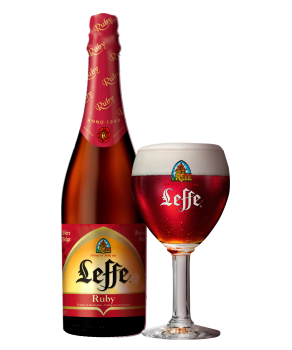

Leffe Ruby
La Leffe RUBY est une bière d’abbaye rouge rafraîchissante née de la rencontre unique entre les saveurs authentiques de la bière d’Abbaye et la délicatesse des arômes boisés de fruits rouges. Elle est composé d' arôme de fraise, framboise, airelle et bois de rose, MALT D'ORGE, céréales contenant du GLUTEN, houblon, levure. Son degrès est un peu plus lèger que les précédentes bières il est de 5.